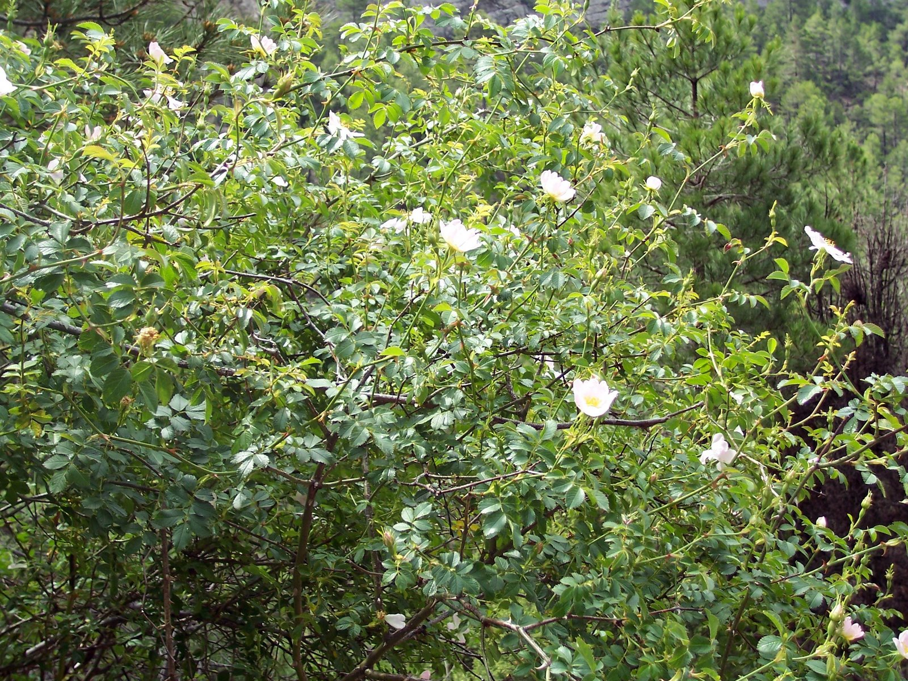

Ayuntamiento de Senés
JARDIN BOTANICO DE ESPECIES AUTOCTONAS DE SENES

Rosa canina

El rosal silvestre (Rosa canina), también conocido como escaramujo, es un arbusto caducifolio muy común en el ámbito mediterráneo y en gran parte de Europa. Se caracteriza por su crecimiento espontáneo en setos, linderos y zonas de matorral.
Puede alcanzar entre 1 y 3 metros de altura, con tallos arqueados provistos de espinas. Sus hojas son compuestas y de color verde intenso, mientras que sus flores, generalmente rosadas o blancas, son sencillas pero muy vistosas. Tras la floración, produce frutos rojos conocidos como escaramujos.
El rosal silvestre se distribuye ampliamente por Europa, Asia y el norte de África, creciendo de forma natural en setos, bordes de caminos, laderas y zonas de matorral.
En la Sierra de los Filabres, aparece en zonas con cierta humedad y suelos bien drenados, formando parte del paisaje tradicional y contribuyendo a la diversidad vegetal.
El rosal silvestre es conocido por sus frutos, los escaramujos, que son muy ricos en vitamina C y poseen propiedades antioxidantes. Se han utilizado tradicionalmente en infusiones, jarabes y preparados naturales.
Además, sus flores y frutos tienen aplicaciones en medicina natural, especialmente en el fortalecimiento del sistema inmunológico.
El rosal silvestre simboliza la belleza natural y la sencillez. A diferencia de los rosales cultivados, representa lo espontáneo y lo auténtico dentro del paisaje.
También simboliza la protección, debido a sus espinas, y la renovación, por su ciclo anual de floración y fructificación.
En Senés, al rosal silvestre se le llama "escaramujero" una planta que alcanza los dos metros de altitud, con rosas blancas y bonitas y un fruto ovalado muy rico en vitaminza C. Para la belleza se utilizaba la infusión de pétalos de rosa, con propiedades astringente, descongestionante, tónica y refrescante. La cásica agua de rosas se preparaba mecerando 150 gramos de pétalos de rosal silvestre en un litro de agua hirviendo, posteriormente se filtraba.
En medicina se utilizaba como astringente, antiinflamatorio, cicatrizante, hemostático, antiasmático, depurativo, diurético, antiparasitario, antiescorbútico y estimulante sexual.
El rosal silvestre florece en primavera, produciendo flores sencillas de gran valor ecológico. Posteriormente, en otoño, maduran sus frutos rojos, los escaramujos.
Los escaramujos del rosal silvestre han sido utilizados históricamente como fuente natural de vitamina C, especialmente en épocas de escasez.
Es una planta muy importante para la fauna, ya que sus frutos sirven de alimento a numerosas especies de aves durante el otoño e invierno.